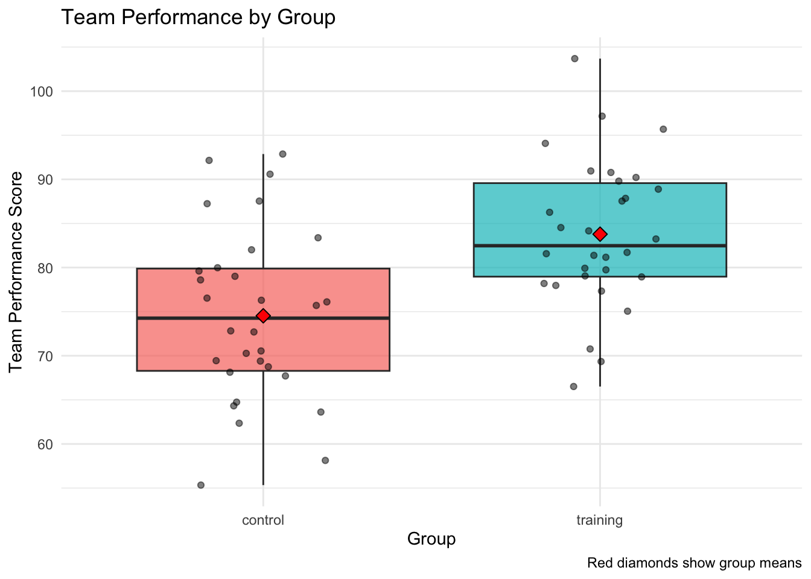

In this lab we will learn how to analyze data obtained from experiments. We will complement the lecture by also introducing some additional, practically relevant concepts.
More precisely, we focus on the following aspects:
Import and explore datasets as typically produced by experiments
Conduct t-tests for simple experimental comparisons
Perform ANOVA for multi-group comparisons
Understand how ANOVA is a special case of linear regression
Analyze factorial experimental designs
Calculate and interpret effect sizes
Create visualizations of experimental results
Throughout the tutorial we will use the following packages:
Show R code
library(dplyr) # Data manipulationlibrary(ggplot2) # Data visualizationlibrary(ggdist) # More visualization optionslibrary(readr) # Simple data importlibrary(broom) # Extract model datalibrary(effectsize) # Effect size calculationslibrary(car) # Advanced ANOVA functionslibrary(emmeans) # Post-hoc comparisonslibrary(knitr) # For nice tableslibrary(kableExtra) # For enhanced table formattinglibrary(patchwork) # For aligning multiple plotslibrary(pwr) # For power analysis and sample size planning
We will use the following data sets, which are available for download from the lab webpage.
For each main analysis tool - t-test, one-way ANOVA, two-way ANOVA - there are a number of steps to be taken:
Get an exploratory overview over the data
Check the assumptions of the analysis tool
Implement the analysis tool
Calculate standardized effect sizes
Conduct post-hoc tests, if necessary
Since the commands are basically the same for all tools, we discuss these steps more extensively in the beginning when dealing with t-tests, and only provide example code later on.
The data used
As usual, it is a good idea to start with looking at the data sets, such that you know what the data looks like:1
The between leadership study
Results of an experiment where the treatment group has received leadership training, and the control group did not. Both groups participated in an exercise where their performance was assessed.
Show R code
head(leadership_study_between) |>kable()
participant_id
group
team_performance
1
control
69.39524
2
control
72.69823
3
control
90.58708
4
control
75.70508
5
control
76.29288
6
control
92.15065
Show R code
summary(leadership_study_between) |>kable()
participant_id
group
team_performance
Min. : 1.00
Length:60
Min. : 55.33
1st Qu.:15.75
Class :character
1st Qu.: 70.71
Median :30.50
Mode :character
Median : 79.33
Mean :30.50
NA
Mean : 79.16
3rd Qu.:45.25
NA
3rd Qu.: 87.32
Max. :60.00
NA
Max. :103.69
The within leadership study
The effectiveness of a leadership training was assessed by testing the performance of a group before and after the training.
Show R code
head(leadership_study_within) |>kable()
participant_id
pre_performance
post_performance
31
77.94803
86.26464
32
74.38718
79.04929
33
71.90985
90.95126
34
64.97675
90.78133
35
80.88522
90.21581
36
65.19792
88.88640
Show R code
summary(leadership_study_within) |>kable()
participant_id
pre_performance
post_performance
Min. :31.00
Min. :56.66
Min. : 66.51
1st Qu.:38.25
1st Qu.:64.46
1st Qu.: 78.97
Median :45.50
Median :68.07
Median : 82.48
Mean :45.50
Mean :69.25
Mean : 83.78
3rd Qu.:52.75
3rd Qu.:73.72
3rd Qu.: 89.57
Max. :60.00
Max. :87.50
Max. :103.69
The communication study
An experiment where employees communicated only by one of three possible ways (face_to_face, via video calls or via email) and then their work satisfaction was assessed.
Show R code
head(communication_study) |>kable()
participant_id
communication_method
satisfaction_score
task_completion_time
1
face_to_face
5.587774
22.63382
2
face_to_face
7.946131
21.65397
3
face_to_face
8.161050
31.79263
4
face_to_face
5.533329
32.06459
5
face_to_face
6.342772
21.33613
6
face_to_face
6.811127
24.59724
Show R code
summary(communication_study) |>kable()
participant_id
communication_method
satisfaction_score
task_completion_time
Min. : 1.00
Length:90
Min. :2.743
Min. :15.57
1st Qu.:23.25
Class :character
1st Qu.:5.840
1st Qu.:23.38
Median :45.50
Mode :character
Median :6.784
Median :27.63
Mean :45.50
NA
Mean :6.752
Mean :28.43
3rd Qu.:67.75
NA
3rd Qu.:7.789
3rd Qu.:32.65
Max. :90.00
NA
Max. :9.936
Max. :47.41
The factorial study
Novice and expert employees received either critical or positive feedback. Afterwards, their performance improvement was assessed.
Show R code
head(factorial_study) |>kable()
participant_id
feedback_type
experience_level
performance_improvement
1
positive
novice
9.572290
2
positive
expert
1.217696
3
positive
novice
7.940961
4
positive
expert
8.549420
5
positive
novice
6.915946
6
positive
expert
6.546548
Show R code
summary(factorial_study) |>kable()
participant_id
feedback_type
experience_level
performance_improvement
Min. : 1.00
Length:120
Length:120
Min. :-1.882
1st Qu.: 30.75
Class :character
Class :character
1st Qu.: 4.206
Median : 60.50
Mode :character
Mode :character
Median : 6.937
Mean : 60.50
NA
NA
Mean : 6.367
3rd Qu.: 90.25
NA
NA
3rd Qu.: 8.757
Max. :120.00
NA
NA
Max. :12.748
💡 Short recap: How have these data sets been created? How do they connect to the experimental designs discussed in the lecture?
Possible answers
Dataset 1: Classic randomized controlled trial (RCT) with treatment and control groups
Dataset 2: One-way experimental design with three conditions (between-subjects)
Dataset 3: 2×2 factorial design allowing us to test main effects and interactions
Connection to lecture: These represent the three main experimental designs we discussed - simple, multi-group, and factorial
Part 2: Simple Experiments - t-tests
Assume we are asking the following research question:
Does leadership training improve team performance?
One way to tackle this question is to compare a treatment group, which has received a leadership training, to a control group, which has not received such training. If the groups are otherwise similar, then this setting should help us to identify the causal effect of the leadership training.2
Descriptive statistics
For this task, we will use the first data set. Let us first compute the standard statistics:
As usual, it is also strongly recommended to complement the quantitative info with a visualization. Data such as those is often presented using boxplots:
Show R code
ggplot(leadership_study_between, aes(x = group, y = team_performance, fill = group)) +geom_boxplot(alpha =0.7) +geom_jitter(width =0.2, alpha =0.5) +stat_summary(fun = mean, geom ="point", shape =23, size =3, fill ="red") +labs(title ="Team Performance by Group",x ="Group",y ="Team Performance Score",caption ="Red diamonds show group means") +theme_minimal() +theme(legend.position ="none")

But boxplots might shallow important distributional info, so you should use them carefully or complement them with other tools. Below is an alternative that provides more information on the distribution of the data. For more on this issue see Holtz (2025).
In the following we want to compare the means across independent groups. To this end, we may use a t-test.
But such statistical tests make specific assumptions about the data. If these assumptions were violated, the results would be unreliable or incorrect. Therefore, it is important to check the adequacy of these assumptions for the data at hand first.
And no worries if the assumptions for one test are violated - usually there are alternatives available.
In the present case, we want to use a simple t-test. This test makes two assumptions:
The two groups each are normally distributed.
The variances of both groups are the same.
To test the first assumption, we can use the Shapiro-Wilk Test for Normality. Here we test the following hypothesis:
\(H_0\) : The data is normally distributed
\(H_1\) : The data is not normally distributed
Thus, we we get \(p > 0.05\), we cannot reject \(H_0\). But for smaller \(p\)-values, we should reject \(H_0\) and need to look for alternatives to the standard t-test.
Shapiro-Wilk normality test
data: pull(filter(leadership_study_between, group == "training"), team_performance)
W = 0.98662, p-value = 0.9614
Good! We cannot reject the hypothesis of normally distributed data as the \(p\)-value is much larger than \(0.05\).
The next step is to test, whether both groups have the same variance. Levene’s test can be used to do exactly this. It tests:
\(H_0\): The variances are equal across groups
\(H_1\): The variances are not equal across groups
If \(p > 0.05\), we do not reject \(H_0\) and we can use a simple t-test. If we have to reject \(H_0\), however, it would be better to use the more robust Welch test.
Show R code
car::leveneTest(team_performance ~ group, data = leadership_study_between)
Levene's Test for Homogeneity of Variance (center = median)
Df F value Pr(>F)
group 1 1.0763 0.3038
58
Again, the \(p\)-value is much larger than \(0.05\), so we can safely continue with the standard t-test.
Independent t-test
The standard independent t-test is the common tool to compare means between two groups when we have continuous data and want to test if there’s a statistically significant difference.
Show R code
t_test_result <-t.test( team_performance ~ group, data = leadership_study_between,var.equal =TRUE# Use FALSE if variances unequal ) t_test_result
Two Sample t-test
data: team_performance by group
t = -3.9344, df = 58, p-value = 0.0002256
alternative hypothesis: true difference in means between group control and group training is not equal to 0
95 percent confidence interval:
-13.962870 -4.545972
sample estimates:
mean in group control mean in group training
74.52896 83.78338
The very small \(p\)-value indicates that the difference of -9.25 is highly significant!
Effect Size Calculation
The previous result tells us that the difference in means between the groups appeaers to be about -9.25. But is this a lot? Effect sizes tell us about the practical significance of our findings by relating the absolute numbers to the scale of the measurement.
Unlike \(p\)-values, effect sizes are not influenced by sample size and help us understand if our statistically significant result is also practically meaningful.
The standard measure is Cohen’s d: This standardized effect size tells us how many standard deviations apart the two group means are. Its interpretation follows a convention:
Small effect: \(d\approx 0.2\) (groups overlap about 85%)
Medium effect: \(d\approx 0.5\) (groups overlap about 67%)
Large effect: \(d\approx 0.8\) (groups overlap about 53%)
The implementation in R is trivial:
Show R code
cohens_d <- effectsize::cohens_d(team_performance ~ group, data = leadership_study_between)print(cohens_d)
Cohen's d | 95% CI
--------------------------
-1.02 | [-1.55, -0.47]
- Estimated using pooled SD.
The key value here is Cohen’s d of -1.02! This suggests a large and practically meaningful effect!
Paired t-test Example
Next, we might want to look at our research question from a slightly different angle. Rather than the between-subject design from above, we now take a within-subject view: to this end, we want to check whether the training had an effect on those people who were in the training (treatment) group by comparing their performance before and after the training.
To this end, we use the data set leadership_study_within, and then use the function t.test() with the argument paired = TRUE. This makes sure we are using the version of the test for the within-subjects context:
Paired t-test
data: leadership_study_within$post_performance and leadership_study_within$pre_performance
t = 7.4774, df = 29, p-value = 3.059e-08
alternative hypothesis: true mean difference is not equal to 0
95 percent confidence interval:
10.55898 18.51001
sample estimates:
mean difference
14.53449
As above, we should also compute standardized effect sizes. There are two options: using the t-test object directly, or using the raw data. If you do the latter, make sure to set paired=TRUE to use the correct version for the within context:
Cohen's d | 95% CI
------------------------
1.37 | [0.86, 1.86]
🎯 Exercise (5 minutes): Interpret the results of the test above. What can we conclude about the effectiveness of leadership training?
Possible answers
Statistical significance: If \(p < 0.05\), training significantly improved performance; since \(p\approx 0\), the training has a highly significant effect
Effect size interpretation: Cohen’s d is large, so we have a large effect. This suggests the effect of the training is also practically meaningful.
Confidence interval: If the CI doesn’t include 0, we’re confident there’s a real difference; even if we are very conservative, we would still expect a 10 point improvement of the training.
Business implication: Training appears effective and worth the investment
Part 3: Multi-Group Experiments - ANOVA (25 minutes)
Let us now turn to the following research question:
Which communication method (face-to-face, video call, email) leads to highest satisfaction?
Note that this time we not only compare one group to another as in the previous section, but we need to compare three groups with each other as we have three different communication methods. Therefore, we cannot use simple t-tests, but need to use an ANOVA.
ANOVA is more robust than t-tests but still requires certain conditions to be met for valid results. In fact, we are testing the same assumptions as in the t-test case:
Normality of Residuals: For ANOVA, we check if the residuals (not the raw data) are normally distributed.
Homogeneity of Variances: ANOVA assumes that the variance of the dependent variable is equal across all groups.
Let us start with testing the normality of the residuals. We again use the Shapiro test, which tests the following hypothesis:
\(H_0\): Residuals are normally distributed
\(H_1\): Residuals are not normally distributed
Thus, if \(p > 0.05\), the Null cannot be rejected and we can assume the residuals to follow a normal distribution. If \(p \leq 0.05\), however, the hypothesis of normally distributed residuals must be rejected and we need to consider transforming the data or using a non-parametric test.
Show R code
aov_model <-aov(satisfaction_score ~ communication_method, data = communication_study)shapiro.test(residuals(aov_model))
Shapiro-Wilk normality test
data: residuals(aov_model)
W = 0.99149, p-value = 0.8342
Since \(p>0.05\) we are on the save side!
We then check the equality of variances and again use Levene’s test with the following hypotheses:
\(H_0\): Variances are equal across all groups
\(H_1\): Variances are not equal across groups
Thus, if \(p > 0.05\), the Null cannot be rejected and we can assume the variances to be equal. If \(p \leq 0.05\), however, the hypothesis of equal variances must be rejected and we need to consider transforming the data or using Welch’s ANOVA.
Show R code
car::leveneTest(satisfaction_score ~ communication_method, data = communication_study)
Levene's Test for Homogeneity of Variance (center = median)
Df F value Pr(>F)
group 2 1.8801 0.1587
87
Again, the Null cannot be rejected and we can continue with the ANOVA as planned.
Before we enter the actual analysis we can also create the common diagnostics plots:
Show R code
model_data <-augment(aov_model) %>%mutate(sqrt_abs_resid =sqrt(abs(.std.resid)),obs_number =row_number() )residuals_vs_fitted <- model_data %>%ggplot(aes(x = .fitted, y = .resid)) +geom_point(alpha =0.7) +geom_smooth(method ="loess", se =FALSE, color ="red") +geom_hline(yintercept =0, linetype ="dashed", alpha =0.7) +labs(title ="Residuals vs Fitted", x ="Fitted values", y ="Residuals") +theme_minimal()qq_plot <- model_data %>%ggplot(aes(sample = .std.resid)) +stat_qq(alpha =0.7) +stat_qq_line(color ="red") +labs(title ="Normal Q-Q", x ="Theoretical Quantiles", y ="Standardized Residuals") +theme_minimal()scale_location <- model_data %>%ggplot(aes(x = .fitted, y = sqrt_abs_resid)) +geom_point(alpha =0.7) +geom_smooth(method ="loess", se =FALSE, color ="red") +labs(title ="Scale-Location", x ="Fitted values", y =expression(sqrt("|Standardized residuals|"))) +theme_minimal()residuals_vs_leverage <- model_data %>%ggplot(aes(x = .hat, y = .std.resid)) +geom_point(alpha =0.7) +geom_smooth(method ="loess", se =FALSE, color ="red") +geom_hline(yintercept =0, linetype ="dashed", alpha =0.7) +labs(title ="Residuals vs Leverage", x ="Leverage", y ="Standardized Residuals") +theme_minimal()combined_patchwork <- (residuals_vs_fitted | qq_plot) / (scale_location | residuals_vs_leverage) +plot_annotation(title ="ANOVA Model Diagnostic Plots",subtitle ="Checking model assumptions",theme =theme(plot.title =element_text(size =16, hjust =0.5)) )combined_patchwork
Residuals vs Fitted: Should show random scatter (no patterns)
Q-Q plot: Points should follow the diagonal line (normality)
Scale-Location: Should show random scatter (equal variances)
Residuals vs Leverage: Identifies influential outliers
One-Way ANOVA
Since we compare three groups we do not use t-tests but an ANOVA.
As you know, ANOVA is actually a special case of linear regression. Therefore, we can get the ANOVA results in two equivalent ways.
The first option is to use the classical aov() function:
Show R code
anova_result <-aov(satisfaction_score ~ communication_method, data = communication_study)summary(anova_result)
Df Sum Sq Mean Sq F value Pr(>F)
communication_method 2 46.29 23.146 13.2 9.81e-06 ***
Residuals 87 152.50 1.753
---
Signif. codes: 0 '***' 0.001 '**' 0.01 '*' 0.05 '.' 0.1 ' ' 1
The second option is to use lm() as we know it from linear regression:
Show R code
lm_model <-lm(satisfaction_score ~ communication_method, data = communication_study)anova(lm_model)
Analysis of Variance Table
Response: satisfaction_score
Df Sum Sq Mean Sq F value Pr(>F)
communication_method 2 46.292 23.1460 13.205 9.813e-06 ***
Residuals 87 152.497 1.7528
---
Signif. codes: 0 '***' 0.001 '**' 0.01 '*' 0.05 '.' 0.1 ' ' 1
The overall \(p\)-value is extremely small, so the Null hypothesis of no difference between the groups should definitely be rejected
In other words: Communication method significantly affects satisfaction scores
This means that at least one communication method produces significantly different satisfaction scores than the others
But the result does not tell us which specific methods differ from each other (need post-hoc tests, see below)
The result also does not contain information about the direction of differences (which method is best/worst) or the effect size
Detour: categorical variables in Regression
When you add a categorial variable as a predictor to your regression, R automatically creates dummy variables for categorical predictors. The first level alphabetically becomes the reference group:
Show R code
summary(lm_model)$coefficients |>kable(digits =3)
Estimate
Std. Error
t value
Pr(>|t|)
(Intercept)
5.776
0.242
23.895
0.000
communication_methodface_to_face
1.702
0.342
4.980
0.000
communication_methodvideo_call
1.227
0.342
3.590
0.001
Since ‘email’ comes first alphabetically, it is the reference group.
Intercept = mean of reference group (email, comes first alphabetically)
communication_methodface_to_face = difference between face_to_face and email
communication_methodvideo_call = difference between video_call and email
As shown above, both approaches give identical results. Still, they offer different perspectives:
Use aov() when: - You want traditional ANOVA output - Focus is on group comparisons - Need post-hoc tests such as TukeyHSD(), which take the aov-model as an input
Use lm() when: - You want to see specific contrasts - Planning to add continuous covariates later - Want regression-style interpretation - Building toward more complex models
Example: From ANOVA to ANCOVA
If we add a continuous variable to an ANOVA, we get an ANCOVA:
Show R code
ancova_model <-lm(satisfaction_score ~ communication_method + task_completion_time, data = communication_study)summary(ancova_model)
Call:
lm(formula = satisfaction_score ~ communication_method + task_completion_time,
data = communication_study)
Residuals:
Min 1Q Median 3Q Max
-3.07895 -0.87806 -0.00768 0.78530 2.90678
Coefficients:
Estimate Std. Error t value Pr(>|t|)
(Intercept) 5.628267 0.807830 6.967 6.15e-10 ***
communication_methodface_to_face 1.737394 0.389664 4.459 2.48e-05 ***
communication_methodvideo_call 1.253306 0.369901 3.388 0.00106 **
task_completion_time 0.004472 0.023342 0.192 0.84853
---
Signif. codes: 0 '***' 0.001 '**' 0.01 '*' 0.05 '.' 0.1 ' ' 1
Residual standard error: 1.331 on 86 degrees of freedom
Multiple R-squared: 0.2332, Adjusted R-squared: 0.2064
F-statistic: 8.718 on 3 and 86 DF, p-value: 4.108e-05
In the example, we now control for individual differences in task completion time. While trivial in the lm()-context, this would be much harder to do with the aov() approach!
Effect Size for ANOVA
\(\eta^2\) tells us what proportion of the total variance in the dependent variable is explained by the independent variable and, as explained above, serves as a standardized measure for comparing effect sizes:
# Effect Size for ANOVA
Parameter | Eta2 | 95% CI
------------------------------------------
communication_method | 0.23 | [0.11, 1.00]
- One-sided CIs: upper bound fixed at [1.00].
\(\eta=\) 0.23 means communication method explains 23 % of the variance of satisfaction scores.
Post-Hoc Comparisons
The ANOVA tells us there’s a difference somewhere among the groups, but not which specific groups differ. This is why we need post-hoc tests: they provide these pairwise comparisons while controlling for multiple testing.
The multiple testing problem
If we do multiple t-tests (e.g. one for each pairwise comparison), our Type I error rate will inflate. Post-hoc tests adjust critical values to maintain overall \(\alpha = 0.05\).
The most common post-hoc test has a nice name: Tukey’s Honestly Significant Difference (HSD). It takes the fitted ANOVA model as its input:
But there are no significant differences between video calls and face-to-face (\(p = 0.35\))
Thus, both face-to-face and video call communication methods produce significantly higher satisfaction scores than email, but face-to-face and video call don’t differ significantly from each other.
Detour: Standardized differences across groups
Now we might want to standardize the differences between groups. Otherwise it is hard to judge whether they are also practically meaningful. Unfortunately, I am not aware of a function in any of the common packages that does this.
But we can do it manually. We first need the mean squared error from the ANOVA summary object:
Show R code
summary(anova_result)
Df Sum Sq Mean Sq F value Pr(>F)
communication_method 2 46.29 23.146 13.2 9.81e-06 ***
Residuals 87 152.50 1.753
---
Signif. codes: 0 '***' 0.001 '**' 0.01 '*' 0.05 '.' 0.1 ' ' 1
This is the 1.753! The square root is the pooled standard deviation:
Show R code
pooled_sd <-sqrt(1.753)
This is how we normalize the differences from our Tukey table above:
So the two statistically significant differences are large effects (so also practically significant), whereas the insignificant difference would only have counted as small to medium effect.
Part 4: Factorial Designs
For this last part we consider the following research question:
How do feedback type and experience level interact to affect performance improvement?
This already gives us a good visual impression of the results, but we also want to analyze the results quantitatively.
Two-Way ANOVA - Checking assumptions
The factorial design allows us to consider interaction effects among factors. But to detect such interaction, we must use a two-way ANOVA, not the traditional one!
In a first step we need to again check the assumptions of the two-way ANOVA, which are in fact the same as in the previous case:
Normality of residuals (not raw data)
Homogeneity of variances (across all groups)
Regarding the first assumption, we again do the Shapiro-Wilk test on the residuals. To get the residuals we need to fit the model first. For this purpose, we use the same function aov() (or lm()) as previously, but add the additional factor to the formula:
While the classical ANOVA was the same as simple linear regression with categorial variables, two-way ANOVA is the same as multiple regression with interaction effects:
Show R code
lm_factorial <-lm(performance_improvement ~ feedback_type * experience_level, data = factorial_study)anova(lm_factorial)
Analysis of Variance Table
Response: performance_improvement
Df Sum Sq Mean Sq F value Pr(>F)
feedback_type 1 13.43 13.4301 1.2373 0.2683
experience_level 1 7.12 7.1155 0.6556 0.4198
feedback_type:experience_level 1 7.88 7.8766 0.7257 0.3960
Residuals 116 1259.07 10.8541
is the same as:
Show R code
summary(factorial_model)
Df Sum Sq Mean Sq F value Pr(>F)
feedback_type 1 13.4 13.430 1.237 0.268
experience_level 1 7.1 7.115 0.656 0.420
feedback_type:experience_level 1 7.9 7.877 0.726 0.396
Residuals 116 1259.1 10.854
We then extract the residuals using the function residuals() and pass them to the shapiro.test():
Show R code
shapiro.test(x =residuals(factorial_model))
Shapiro-Wilk normality test
data: residuals(factorial_model)
W = 0.98225, p-value = 0.1153
Since we test the same assumptions as above, \(p>0.05\) means that we cannot reject the \(H_0\) of normally distributed residuals.
Let us then turn to the second assumption: Homogeneity of variances across all groups. The syntax remains basically the same as above:
Show R code
car::leveneTest( performance_improvement ~ feedback_type * experience_level, data = factorial_study)
Levene's Test for Homogeneity of Variance (center = median)
Df F value Pr(>F)
group 3 6.2621 0.0005615 ***
116
---
Signif. codes: 0 '***' 0.001 '**' 0.01 '*' 0.05 '.' 0.1 ' ' 1
Oh no! This time \(p<0.05\), so we need to reject \(H_0\) of equal variances, meaning that some cells (in the sense of factor-combinations) have more variation than others.
From this it becomes clear that the variability for the groups receiving critical feedback is much higher!
Understanding the Variance Pattern
We could have a look at which cells are affected like this:
This suggests that some people respond very well to criticism, others very poorly and that there are important differences in how people handle criticism:
Critical feedback cells: High variance (14-17) suggests people respond very differently to criticism
Positive feedback cells: Low variance (5-7) suggests people respond more consistently to praise
This example shows how testing assumptions is not only relevant for its own sake, but also hints an interesting results themselfes.
The higher variance in the critical feedback cells suggests that critical feedback is “riskier” - it might help some people a lot but hurt others, but that positive feedback is more predictable in its effects.
In effect this means that the results of the standard two-way ANOVA would be less reliable. But that mean our analysis must end? Fortunately not! There are versions of the two-way ANOVA that are robust to unequal variances!
To implement such robust version we use the function Anova() from the car package, which takes the resul of the aov() function above. But it is important to specify type = "III" as this tells R to use the version that takes into account unequal variances:
Show R code
factorial_model_robust <- car::Anova(factorial_model, type ="III")
Two-Way ANOVA: Interpretation
Let us now inspect the results of the two-way ANOVA. We will pay particular attention to the following aspects:
Main effect of feedback_type: Overall difference between positive vs critical
Main effect of experience_level: Overall difference between novice vs expert
Interaction: Does the effect of feedback depend on experience level?
Statistical power is the probability of detecting an effect when it truly exists. You know from the lecture that the decision about sample sizes determines in part statistical power. Power analysis helps us plan adequate sample sizes and evaluate our study’s sensitivity.
General aspects of power analysis
Remember the components of power analysis:
Power: Probability of detecting effect (usually we want ≥ 0.8)
Effect size: How big a difference we want to detect
Sample size: Number of participants needed
Alpha level: Type I error rate (usually 0.05)
We can use power analysis in two different ways:
Post-hoc (observed): What was our power given the sample size we had?
A priori (prospective): How many participants do we need to detect an effect?
Regarding the first, we may ask: what was our power to detect the effect we found in the leadership study?
Show R code
observed_power <-pwr.t.test(n =30, d =as.numeric(cohens_d$Cohens_d), sig.level =0.05)print(observed_power)
Two-sample t test power calculation
n = 30
d = 1.015848
sig.level = 0.05
power = 0.9718339
alternative = two.sided
NOTE: n is number in *each* group
Lets turn to the a priori power analysis, i.e. what you should do BEFORE collecting data to determine how many participants you need.
In a first step, you always need to specify your research parameters:
What effect size do you want to detect?
What power level do you want? (typically 0.8 or 0.9)
What alpha level will you use? (typically 0.05)
The remaining steps depend on the analysis method we wish to employ:
t-Tests
Assume we want to plan a new leadership training study, similar to the one above. We want to detect a medium effect (\(d = 0.5\)) with 80% power.
Show R code
sample_size_medium <-pwr.t.test(d =0.5, power =0.8, sig.level =0.05)print(sample_size_medium)
Two-sample t test power calculation
n = 63.76561
d = 0.5
sig.level = 0.05
power = 0.8
alternative = two.sided
NOTE: n is number in *each* group
If instead we would like to identify a small effect (with \(d=0.5\)). Everything else remains the same:
Show R code
sample_size_small <-pwr.t.test(d =0.2, power =0.8, sig.level =0.05)print(sample_size_small)
Two-sample t test power calculation
n = 393.4057
d = 0.2
sig.level = 0.05
power = 0.8
alternative = two.sided
NOTE: n is number in *each* group
And what would happen if we wanted higher power (90%) for a medium effect?
Show R code
sample_size_high_power <-pwr.t.test(d =0.5, power =0.9, sig.level =0.05)print(sample_size_high_power)
Two-sample t test power calculation
n = 85.03128
d = 0.5
sig.level = 0.05
power = 0.9
alternative = two.sided
NOTE: n is number in *each* group
We see that small design choices can have huge effects:
Assume we are planning a communication study with 3 groups and we want to detect a medium effect (f = 0.25) with 80% power. Note that what was Cohen’s d for the t-test case, has now become Cohens f for the ANOVA case:
Show R code
sample_size_anova <-pwr.anova.test(k =3, f =0.25, sig.level =0.05, power =0.8)print(sample_size_anova)
Balanced one-way analysis of variance power calculation
k = 3
n = 52.3966
f = 0.25
sig.level = 0.05
power = 0.8
NOTE: n is number in each group
Aside from that it works the same way as above!
Summary and Key Takeaways
Key take-aways
Data exploration is crucial before statistical testing
Assumption checking ensures valid results and guides method selection
Effect sizes provide practical significance context beyond p-values
Visualization aids interpretation and communication of results
ANOVA is just regression with categorical predictors
Both aov() and lm() give identical results but offer different perspectives
Post-hoc tests control for multiple comparisons when making pairwise comparisons
Factorial designs allow detection of interactions between factors
I use the function kable() for nicer output in the html file. When you replicate the code in R-Studio its best to skip the part |> kable().↩︎
At this point we assume that the groups were similar before the training. In practice, it would be good to first make sure the performances of the groups before the training were similar.↩︎